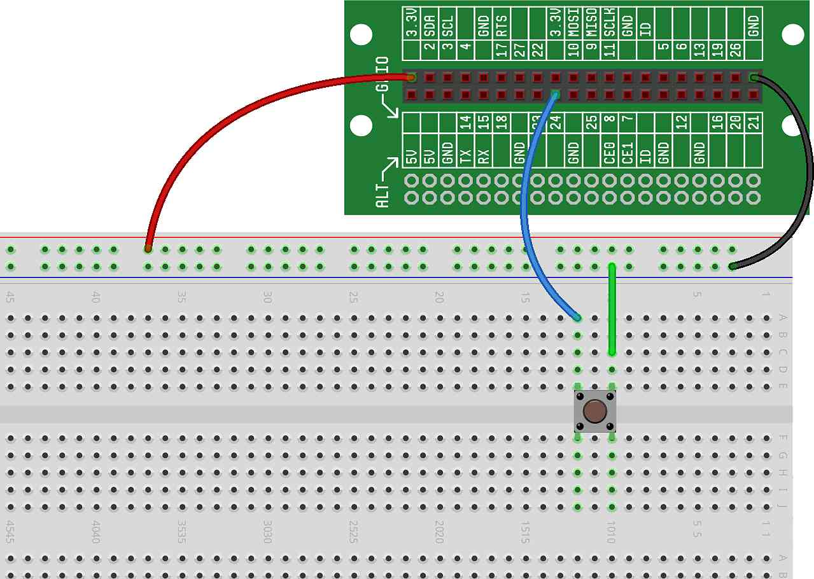

In the previous project, we allowed our Minecraft character to build a simple house at the touch of a button. We did no verification that the bottom of the house sat on the ground — in some cases, the house could have been built in mid-air.
In this project, we'll allow our character to construct the same house as in the previous project, but in this project, we'll place a base of blocks from the bottom of the house well down into the ground.
For this project, we just need a single button, wired to GPIO24: 
First this project, we'll implement a base (or foundation) for the house if
it's location is somewhere above ground level. We'll do this
using the setBlocks() function, and we'll also take a little shortcut
— we'll assume that the house is no more than 64 blocks above the
ground.
To implement this, we'll need to draw a large cube below our house, and we'll
need to pass the location of the two far corners of that cube to the
setBlocks() function.
Here is what the code for this project should look like at this point (with new changes highlighted with arrows):
Give it a try. Remember, the house is only being constructed at a small offset from our character, so you may need to move forward and turn around to see what you built.
Assuming you still have your controller wired up, add this house making code to the Minecraft controller code ( project) so that you can build a house while using the CREATOR Kit as a controller.
We built the foundation out of STONE — can you change this to BRICK?
Instead of making the foundation 64 block deep, only make it 3 blocks deep. Then, fly into the air and create a house — you'll be able to fly under it and see your 3 block thick foundation.
Can you create a foundation that is larger than the base of the house in the X and Z directions?